Collage techniques are commonly used in visualization to organize a collection of geometric shapes, facilitating the
representation of visual features holistically, as seen in word clouds or circular packing diagrams. Typically, packing methods rely on
object-space optimization techniques, which often necessitate customizing the optimization process to suit the complexity of geometric
primitives and the specific application requirements. In this paper, we introduce a versatile image-space collage technique designed to
pack geometric elements into a given shape. Leveraging a differential renderer and image-space losses, our optimization process is
highly efficient and can easily accommodate various loss functions. We demonstrate the diverse visual expressiveness of our approach
across various visualization applications. The evaluation confirmed the benefits of our method in terms of both visual quality and time
performance.
 
